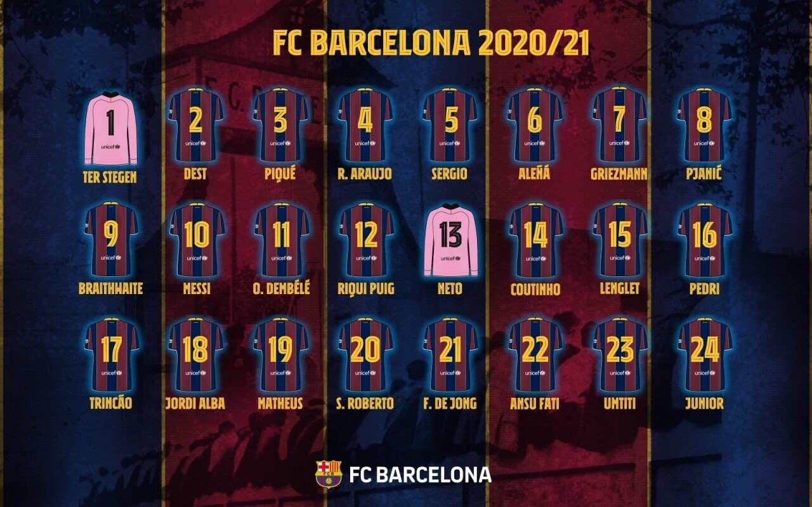

20/21 스쿼드
팀 주축 멤버
라 마시아를 통해 육성한 선수들이 널리 알려져 있다.
리오넬 메시, 안드레스 이니에스타, 차비 에르난데스, 제라르 피케, 세르지오 부스케츠 등이 있고,
이들 모두 이미 10년 넘게 바르셀로나 1군에서 활약하며 전 세계에서 최상위급 퍼포먼스를 보였던 선수들이다.
또한 이적을 통하여 영입된 루이스 수아레스, 이반 라키티치, 마르크안드레 테어슈테겐, 조르디 알바가 뛰어난 활약을 보이며
바르셀로나의 주축 멤버로 활약하고 있다.
과르디올라 시기까지만 해도 라 마시아에서 많은 선수들을 콜업하여 사용했지만
루이스 엔리케, 에르네스토 발베르데, 키케 세티엔을 거쳐오면서 라 마시아를 콜업하여 사용하는 일이 많이 줄어들었다.
우스만 뎀벨레, 프렝키 더용, 클레망 랑글레, 필리페 쿠티뉴, 앙투안 그리즈만 등과 같이
타 클럽에서 뛰어난 활약을 보여준 선수들을 영입하는 사례가 늘어나면서 많은 팬들이 아쉬운 감정을 나타냈다.
하지만 2020-21 시즌, 로날트 쿠만 감독이 부임하면서 많은 변화가 일어났다.
많은 노장 선수들을 과감하게 방출하고 라 마시아 출신 선수들로 그 공백을 매웠다.
안수 파티, 리키 푸치, 로날드 아라우호와 같이 FC 바르셀로나 B에서 충분한 활약을 보여준 선수들을 정식 1군으로 등록하였으며
페드리, 마테우스 페르난지스와 같이 바르사 B 소속으로 임대를 갔다 온 선수들도 1군에 등록시키면서
과르디올라 시절에도 없었던 기록, 단일 이적 시장에서 5명의 유소년 선수들을 한 번에 콜업시키는 기록을 달성하였다.